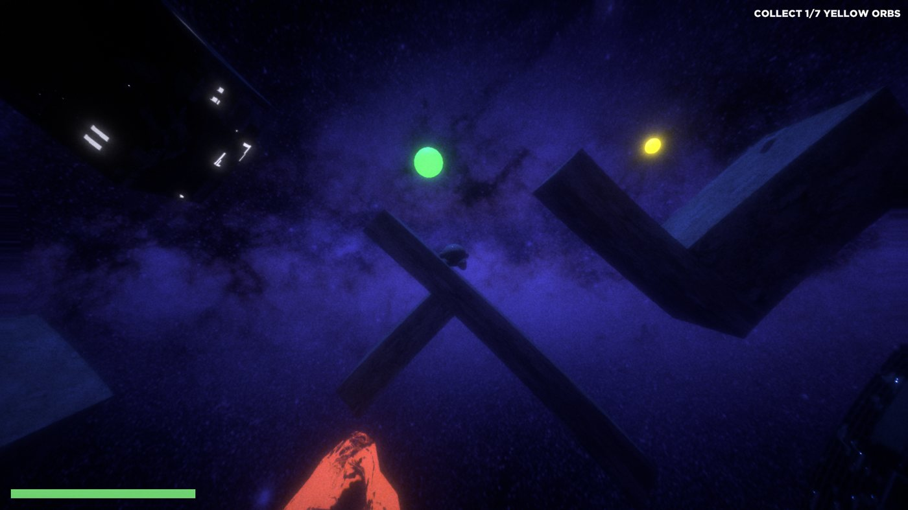
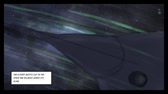
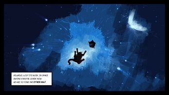
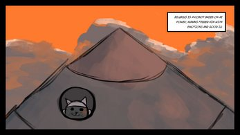
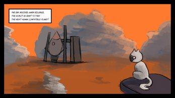

Other Half
Other Half is a concept game developed by Damn Boi Studios for ACAD’s 2024 Game Jam.
The story follows a robotic cat on a mission to find a new home planet for humanity. During its journey through the vast emptiness of space, the cat loses half of its body — its other half. Despite being mechanical, the cat thinks and feels like a human, experiencing isolation and longing as it drifts alone across the stars.
Trailer
My roles
Responsibilities
- Designed level layout and platforming sequences, focusing on smooth difficulty progression and player flow
- Built the overall gameplay structure and pacing, ensuring clarity and engagement
- Led environment design and level composition, shaping navigation and spatial experience
- Defined the game’s visual identity and tone, aligning it with core mechanics
- Designed UI/UX elements to improve readability, player guidance, and interaction clarity
- Developed core gameplay content within a 3-day game jam, contributing to a Top-15 finish
Screenshots





My design breakdown
How it works
01
Rotating Platform
Core mechanic
During the ACAD game jam, I explored moving player control away from direct movement toward changing the environment. Instead of moving the player through space, the idea was to move the platform itself.
Full platform movement was too complex for the time limit, so the idea became a rotating platform system. Players control orientation instead of position, so balance, timing, and spatial awareness become the keys to progress.
I built the first prototype to test this, and it played in a fun, unusual way. I then worked with my team to polish it, improving responsiveness, level integration, and overall feel.
02
Design Decisions
- Why rotation instead of movement?
- Rotating the platform kept the controls simple while adding a unique spatial challenge. It moved the difficulty away from complex inputs and toward anticipation and positioning.
- What changed? What did I learn?
- Early prototypes felt confusing because there was little feedback during rotation. Adjusting the rotation speed and adding clearer visual cues fixed this. The final version felt more responsive and readable.
03
Additional Contributions
During the jam I worked across design, direction, and presentation. I split up tasks within the team to keep work smooth and aligned, and designed the UI/UX with a focus on clarity.
I also built the visual identity, including the logo and overall look. I wrote the core story idea and expanded it into a comic panel to show the game's premise. On top of that, I composed the original soundtrack and made the official trailer using Blender and Premiere Pro.
Music I made for Other Half